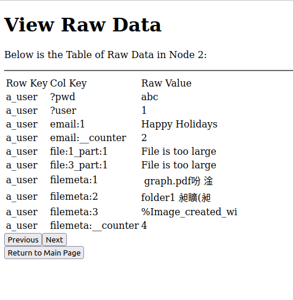

PennCloud

PennCloud is a Distributed Cloud Platform that provides Webmail and File Storage services (Similar to Gmail and Google Drive). The frontend consists of Multi-threaded HTTP servers and a load balancer to support multi-user connections. The backend consists of key-value store servers similar to Google BigTable. With primary-based replication, a central master node management, recovery, and checkpointing, the system is able to support sequential consistency, crash fault-tolerance, and high scalability.
Features
- User Login and Registration (HTTP, TCP/IP)
- Mail Inbox (SMTP)
- File Storage up to 30 MB
- Sequential Consistency and Fault-tolerance
- Admin Console for monitoring system status and testing
User Login
Support multi-user, load balancing, and change password
Mail Inbox
With SMTP servers implemented to send/receive emails, the mail service is able to send, receive, reply, forward, and delete emails for either accounts within the system or outside accounts (such as gmail).
File Storage
Each user can upload up to 30 MB files of any format. Supports nested folders and move file to folders.
Admin Console
Internal users can monitor node status, test fault-tolerance by manually shutdown and restart nodes, and view raw data within each data storage node.
